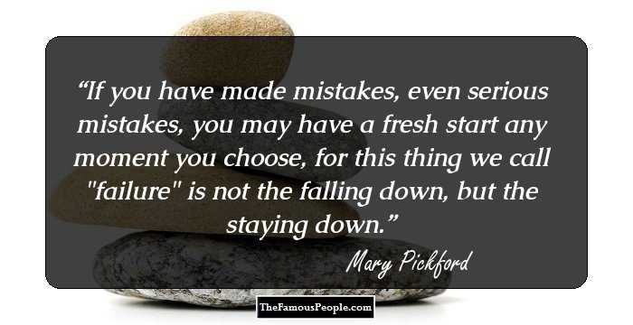

8th April, 1892 AD Historical Events On 8th April,Toronto
Died:
29 May 1979 AD
Place Of Death :Santa Monica
Occupation:
Actress, Producer, Screenwriter
Spouse:
Owen Moore (1911–1920), Douglas Fairbanks (1920–1936), Charles Rogers (1937–1979)
Children:
Ronald Charles Rogers, Roxanne Rogers
Relatives:
Father: John Charles Smith
Mother: Charlotte Hennessy
Siblings: Lottie Pickford, Jack Pickford
Also Listed In:
T V & Movie Producers, Actresses
Nationality:
Canadian : Famous Canadian Women, American : Famous American Women
Awards:
1929 - Academy Award for Best Actress
1976 - Academy Honorary Award for a lifetime of achievements
Mary Pickford
Mary Pickford was a Canadian-American motion picture actress. She began working as a motion-picture extra at D.W. Griffith’s Biograph Studio, starring in his film, “The Lonely Villa”. She switched permanently to the screen, with Adolph Zukor’s Famous Players Company. Her meteoric rise from an anonymous player to a star with her own production company was attributable not only to the phenomenal popularity of her films, but also to her dedication to her craft, and her meticulous care in creating quality entertainments. The innocence and sweetness of her characters in films such as “Hearts Adrift”, and “Rebecca of Sunnybrook Farm” enthralled audiences everywhere. With the release of “Tess of the Storm Country”, she was firmly established as “America’s Sweetheart.” She was paid an exorbitant $350,000 per film at one point of time. She took the lead in organizing the United Artists Corporation with Griffith, Charlie Chaplin, and Douglas Fairbanks. Her popularity continued unabated in “Pollyanna”, “Little Lord Fauntleroy”, and “Coquette” (her first talking picture, for which she won an Academy Award for best actress). With the onset of talkies her popularity waned, and she retired from acting. She married thrice, and became an alcoholic. In her later years, she shunned public life, and became a recluse.
Childhood & Early Life
Mary Pickford was born Gladys Marie Smith on April 8, 1892 in Toronto, Ontario, to Charlotte Hennessy and John Charles Smith who worked a variety of odd jobs. She had two younger siblings, actors Jack and Lottie Pickford.
Her alcoholic father left his family in 1895, and died three years later of a cerebral haemorrhage. Hennessy, who had worked as a seamstress throughout the separation, began taking in boarders.
One of the lodgers was a theatrical stage manager, and at his suggestion, Gladys was given two small roles, of a boy and a girl, in a production of “The Silver King”.

Career & Later Life
She acted in many melodramas with Toronto’s Valentine Company, finally playing a major child role in their version of, “The Silver King”, and starring as Little Eva in their production of “Uncle Tom’s Cabin”.
She finally landed a supporting role in a 1907 Broadway play, “The Warrens of Virginia”. The producer of the play insisted that Gladys Smith assume the stage name Mary Pickford.
She performed in her first film, “Her First Biscuits”, directed by D.W. Griffith. She signed with the Biograph Company at $10 per day in 1909, and also met her future husband, Owen Moore.
In January 1910, Pickford traveled with a Biograph crew to Los Angeles. Audiences began to identify her. Exhibitors advertised her film with captions reading, The Girl with the Golden Curls and Blondilocks.
She left Biograph, and spent 1911 starring in films at Carl Laemmle’s Independent Moving Pictures Company (IMP) at $175 per week. Her first IMP short was, “Their First Misunderstanding”, with Owen Moore.
Pickford returned to work with Griffith in 1912, and gave memorable performances in films such as “Friends”, “The Mender of Nets”, “Just Like a Woman”, and “The Female of the Species”.
She made her last Biograph picture “The New York Hat” in 1912, and performed on Broadway in “A Good Little Devil”, but decided that in future she would work exclusively in films.
“Caprice”, a 1913 silent film produced by Daniel Frohman and Adolph Zukor gave her the chance to shine as a fine actress instead of just merely a popular performer.
Adolph Zukor, the founder of Paramount Pictures, made a feature version of “A Good Little Devil”. Mary reprised her role as Julia in her first feature-length film, released it in 1914.
In 1916, Pickford signed a new contract with Zukor, and in the next two years did films such as “The Poor Little Rich Girl”, “Rebecca of Sunnybrook Farm”, and “Daddy-Long-Legs”.
“Pollyanna”, a 1920 American melodrama/comedy film was her first motion picture for United Artists. It grossed $1.1 million (equivalent to 10 million now), and is one of her most defining pictures.
In, “Little Lord Fauntleroy”, a 1921 American film directed by Alfred E. Green and Jack Pickford, she played dual roles as both Cedric Errol and Widow Errol.
Her film, “Rosita”, in 1923, earned over $1,000,000 winning praise from critics, and the audience. Other hits like “Sparrows”, and “My Best Girl” followed, but the arrival of sound was her undoing.
“Coquette” (1929) was her first talkie. The film was a box office success, firmly launching Mary Pickford as a sound actress. For her role, she won the second Academy Award for Best Actress.
She found her career fading as talkies became more popular, and retired from acting in 1933. She continued to produce films for others, including, “Sleep”, “My Love”, and “Love Happy”.
Major Works
In “Tess of the Storm Country”, a 1914 drama, she played the role of Tessibel Skinner. The movie sent Pickford’s “career into orbit, and made her the most popular actress in America”.
In 1919, Pickford – along with D.W. Griffith, Charlie Chaplin, and Douglas Fairbanks – formed the independent film production company United Artists, and she continued to produce, perform in her own movies and distribute them.
Awards & Achievements
In 1930, she was nominated for an Oscar for “Coquette”. Her performance was critically and publicly acclaimed, and she managed to silence her detractors who accused her of lobbying for the award.
She received an Oscar for a lifetime of achievements in 1976 “in recognition of her unique contributions to the film industry and the development of film as an artistic medium”.
Personal Life & Legacy
She married thrice to Owen Moore, Douglas Fairbanks, and in 1937, to her last husband, actor and band leader, Charles ‘Buddy’ Rogers. They adopted two children: Roxanne and Ronald Charles.
Pickford had become an American citizen upon her marriage to Douglas Fairbanks in 1920. Towards the end of her life, she wished to “die as a Canadian” and was granted a dual Canadian-American citizenship.
After retiring from the screen, Pickford became an alcoholic, and gradually a recluse. She died at a Santa Monica hospital of complications from a cerebral hemorrhage she had suffered the week before.
Pickford received a posthumous star on Canada’s Walk of Fame in Toronto, and was featured on a Canadian postage stamp. In 2011, the Toronto International Film Festival exhibited a collection of her memorabilia.
Trivia
This Canadian-American actress was No.24 on The American Film Institute’s 50 Greatest Screen Legends, and is portrayed by Maria Pitillo in the film, “Chaplin”.
The first film-star to receive a percentage of a film’s earnings, she had to be dissuaded from having all her films destroyed after her death for fear that no one would care about them.